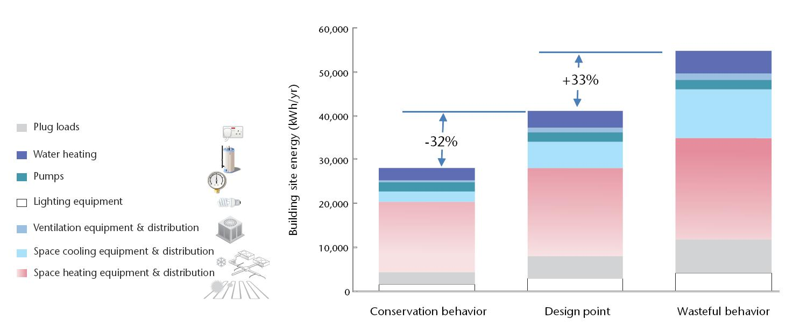

Τα κτήρια μπορούν να αποτελέσουν το 40% περίπου της ενεργείας που μπορεί να εξοικονομηθεί (Εικόνα 1). Πολλή ενέργεια σπαταλείται από τα κτήρια λόγω του φτωχού σχεδιασμού τους, της ανεπαρκούς τεχνολογίας και της αλόγιστης ανθρώπινης συμπεριφοράς. Και τα καινούρια, αλλά και τα παλιά κτηρια μπορούν να γίνουν ενεργειακά αποδοτικά με το συνδυασμό άμεσων αλλά και παθητικών ενεργειών όσον αφορά το σχεδιασμό και τη λειτουργία τους. Διαθέτοντας τον καλύτερο δυνατό σχεδιασμό και άλλες τεχνικές λύσεις μπορεί να μειωθεί η κατανάλωση ενέργειας στα δύο τρίτα.

Ο αριθμός των σπιτιών με μικρή κατανάλωση ενέργειας είναι γεγονός σε πολλές χώρες, και παρόλο που είναι ακόμα περιορισμένος καταδεικνύεται ότι οι στόχοι για εξοικονόμηση ενέργειας είναι επιτεύξιμοι. Η συμπεριφορά των χρηστών των κτηρίων μπορεί επίσης να κάνει κάποια διαφορά. Για παράδειγμα, οι χρήστες που είναι σπάταλοι μπορεί να συμβάλουν στην προσθήκη του ενός τρίτου ενεργειακής απόδοσης ενός κτηρίου, ενώ οι συντηρητικοί μπορούν να εξοικονομήσουν αυτό το ένα τρίτο (Εικόνα 2).
Υπάρχουν διάφορα σενάρια τα οποία μπορούν να υπολογίσουν τις μελλοντικές τάσεις για κατανάλωση ενέργειας από τον κτηριακό τομέα (Εικόνα 3). Το σενάριο ‘Sleepwalking’ προβλέπει μια συνέχεια των σύγχρονων τάσεων για ενεργειακή κατανάλωση, χωρίς κάποια συνεχή προσπάθεια να εξεταστεί το ενδεχόμενο της ενεργειακής αποδοτικότητας στον κτηριακό τομέα. Σύμφωνα με αυτό το μοτίβο, η συνολική κατανάλωση ενέργειας θα είναι πολύ μεγαλύτερη μέχρι το 2050. Στο σενάριο ‘Too little too late’ υπάρχει μια τάση του μοτίβου να λέγονται πολλά αλλά πολύ λίγες ενέργειες/πράξεις να γίνονται. Δηλαδή, η αναγνώριση του τι συμβαίνει συνεχίζει να υπάρχει, αλλά η ενεργοποίηση είναι αποσπασματική και όχι συντονισμένη. Σε αυτή την περίπτωση, η ανάπτυξη των κτηρίων με χαμηλή κατανάλωση ενέργειας είναι ακόμη πολύ αργή, με την κατανάλωση ενέργειας να επιστρέφει στα σύγχρονα επίπεδα μέχρι το 2020. ‘Transformation’ είναι το μόνο σενάριο που περιλαμβάνει την απαραίτητη εξοικονόμηση ενέργειας από ένα κτήριο. Σε αυτό το σενάριο, νέες πολιτικές για τη διαχείριση της ενέργειας εκτελούνται, νέες προσεγγίσεις σχεδιασμού και νέες τεχνολογίες εφαρμόζονται και καλλιεργούνται νέες δεξιότητες. Αυτό είναι μέρος μιας συντονισμένης παγκόσμιας δράσης. Η ενημέρωση και η συνειδητοποίηση γύρω από θέματα που αφορούν τις προτεραιότητες στη χρήση ενέργειας, οδηγούν σε αλλαγή συμπεριφοράς και προκαλούν τη γρήγορη λήψη αποφάσεων για αξιοποίηση όλο και περισσότερων ενεργειακά αποδοτικών τεχνολογιών και πρακτικών.

Η συνολική ενέργεια που χρησιμοποιείται από τα κτήρια επηρεάζεται από τρεις καθοριστικούς παράγοντες: το πλήθος των χρηστών, τα τετραγωνικά μέτρα ανά άτομο και την ενέργεια ανά τετραγωνικό μέτρο. Αυτοί οι καθοριστικοί παράγοντες παρουσιάζονται στον τύπο: συνολική ενέργεια = πλήθος χρηστών * χώρος ανά άτομο * kWh ανά m2. Τα στοιχεία της εξίσωσης επηρεάζονται άμεσα από διάφορους άλλους παράγοντες. Κύριοι παράγοντες είναι τα δημογραφικά στοιχεία, οι κοινωνικές και πολιτιστικές τάσεις, ο σχεδιασμός και εξοπλισμός των κτηρίων, καθώς επίσης και το κλίμα. Για παράδειγμα, οι γηραιότεροι πληθυσμοί και η αλλαγή του τρόπου ζωής οδηγούν σε όλο και περισσότερες περιπτώσεις νοικοκυριών που αποτελούνται από ένα άτομο. Οι κοινωνικές τάσεις επηρεάζουν το μέγεθος των νοικοκυριών και επομένως επηρεάζουν το μέγεθος του χώρου και την κατανάλωση ενέργειας ανά άτομο. Οι πολιτιστικοί παράγοντες επηρεάζουν το βαθμό αποδοχής διαφόρων επιπέδων άνεσης. Ο σχεδιασμός του κτηρίου και η επιλογή του εξοπλισμού του καθορίζουν το επίπεδο ενεργειακών αναγκών. Το κλίμα επηρεάζει τις απαιτήσεις για τη θέρμανση και το δροσισμό ενός κτηρίου. Ανάλογα με τις προϋποθέσεις που αναφέρθηκαν πιο πάνω, η χρήση της ενέργειας διαφέρει κατά πολύ σε όλη την υφήλιο (Εικόνα 4).

Η χρήση ενέργειας για τη θέρμανση χώρου είναι πρώτη για την Ευρώπη, ενώ η χρήση ενέργειας για τη θέρμανση του νερού είναι πολύ σημαντική στην Ιαπωνία. Στις αγροτικές περιοχές της Ινδία, όπως και σε πολλές αναπτυσσόμενες χώρες, όπου οι άνθρωποι δεν έχουν πρόσβαση σε ηλεκτρισμό, η κυριότερη χρήση ενέργειας είναι για το μαγείρεμα και γίνεται κυρίως με αξιοποίηση ενέργειας από βιομάζα. Στις αναπτυγμένες χώρες, που είναι πλούσιες και συνεχώς ο πλούτος τους αυξάνεται, αυτόματα, αυτό οδηγεί σε ψηλότερες ανάγκες για χρήση ενέργειας για διάφορους σκοπούς.